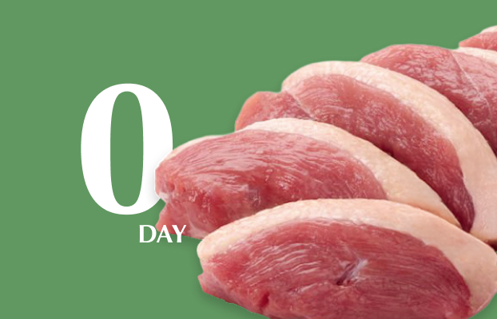

오드그로서입니다.
우리는 식탁에 놓일
가장 완벽한 순간을 선별합니다.

-
갓 생산한
신선한 식품을,
여러분의
식탁까지
바로 배송합니다. -
오늘 도계한
신선한 닭고기를,
여러분의
식탁까지
바로 배송합니다. -
오늘 낳은
신선한 달걀을,
여러분의
식탁까지
바로 배송합니다. -
최적 숙성한
신선한 돼지고기를,
여러분의
식탁까지
바로 배송합니다.
-
최적 숙성한
신선한 소고기를,
여러분의
식탁까지
바로 배송합니다. -
오늘 도압한
신선한 오리고기를,
여러분의
식탁까지
바로 배송합니다. -
오늘 도정한
신선한 쌀을,
여러분의
식탁까지
오늘 배송합니다.
FOR TASTE
가장 맛있는 순간을 전합니다.
- Cut
- 수확의 순간부터
- Consume
- 먹는 순간까지
도축•수확 즉시, 바로 배송합니다.
- 오드그로서
-
- 수확
- 식탁
- 일반 유통
-

- 수확
- 유통
- 보관
- 식탁
- Peak Time
- 가장 맛있는 순간
오드그로서는 식탁에 놓을 가장
완벽한 순간을 선별합니다.
-
퍼지지 않고 선명한 흰자,
달걀 본연의 고소함
달걀이 가장 맛있는 순간,
산란일로부터 +0일
갓 낳은 신선함 -
탱글한 식감,
촉촉하게 살아있는 육즙
닭고기가 가장 맛있는 순간,
도계일로부터 +0일
갓 잡은 신선함 -
촉촉한 육즙,
고소하게 퍼지는 풍미
돼지고기가 가장 맛있는 순간,
도축일로부터 +5일
풍미 숙성 -
탄탄한 결,
깊고 짙은 육향
소고기가 가장 맛있는 순간,
부위별 맞춤 최적 숙성 -

부드러운 육질,
은은하게 감도는 고소함
오리고기가 가장 맛있는 순간,
도압일로부터 +0일
갓 잡은 신선함
- BEHAVIOR
- 오드그로서의 약속
-
식재료의 본질을 지키는 것
오드그로서의
변함없는 약속입니다. -
Be ODD
Eat REAL
- 피크타임 보증제
- 오드그로서는 도축·산란일자 공개를 통해, 생산부터 식탁까지 전 과정을 책임지는 C2C(Cut to Consume) 철학으로 ‘가장 맛있는 순간’을 약속합니다.
- 오드그로서 콜드체인
- 중간 유통 단계를 없앤 직배송 시스템으로 수확의 첫 순간부터 고객의 문 앞까지, 가장 맛있는 온도를 지켜냅니다. 특수 제작된 아이스박스와 친환경 냉매제를 통해 배송되는 모든 과정에서 최적 온도를 관리합니다.
- 낭비없는 소비
- 오드그로서는 필요한 만큼만 구매하는 ‘소단량 상품'을 제안합니다. 매번 최고의 신선함을 온전히 즐기고, 불필요한 낭비를 줄이는 오드그로서의 지속가능한 약속입니다.
- 레시피타운
- 레시피타운은 오드그로서의 ‘피크타임’ 식재료가 지닌 진정한 가치를 아는 사람들이 모여, 자신만의 특별한 레시피와 이야기를 공유하는 커뮤니티입니다.